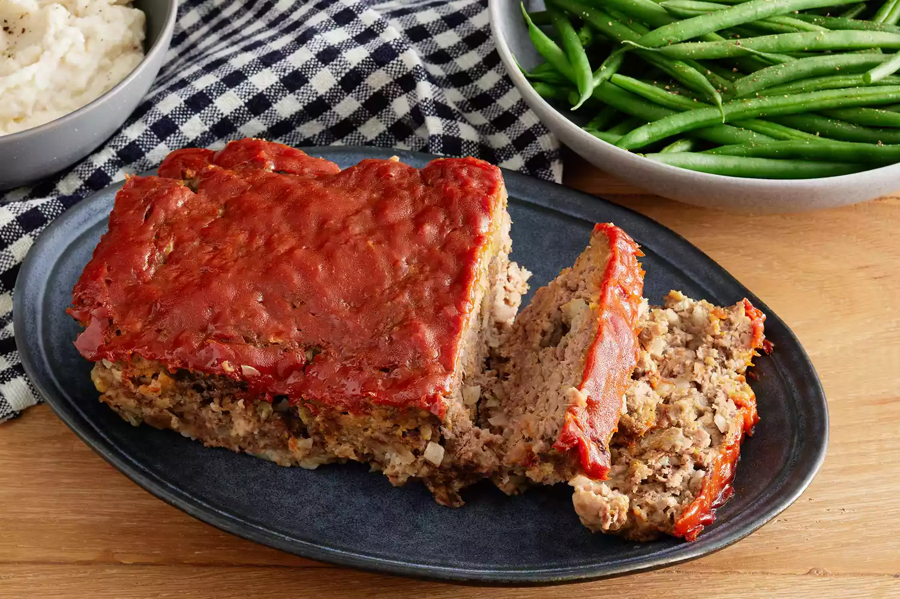

Meatloaf

Description
A classic comfort food, meatloaf is a great option for an easy weeknight dinner that can feel a little special!
This dish goes great with mashed potatoes, green beans, or any other classic sides of your choosing. Also makes a great filling for a sandwich in a packed lunch
Ingredients
For the meatloaf
- 1½ pounds ground beef
- 1 large egg
- 1 onion, chopped
- 1 cup full-fat milk
- 1 cup breadcrumbs
- salt and pepper, to taste
For the sauce
- ⅓ cup tomato ketchup
- 2 tablespoons dark brown sugar
- 2 tablespoons dijon mustard
Steps
- Preheat the oven to 350 degrees F (175 degrees C). Lightly grease a 9x5-inch loaf pan.
- Combine ground beef, onion, milk, breadcrumbs, and egg in a large bowl; season with salt and pepper. Transfer into prepared loaf pan.
- Mix ketchup, brown sugar, and mustard together in a small bowl until well combined; pour over meatloaf and spread it evenly over the top.
- Bake in the preheated oven until no longer pink in the center, about 1 hour.